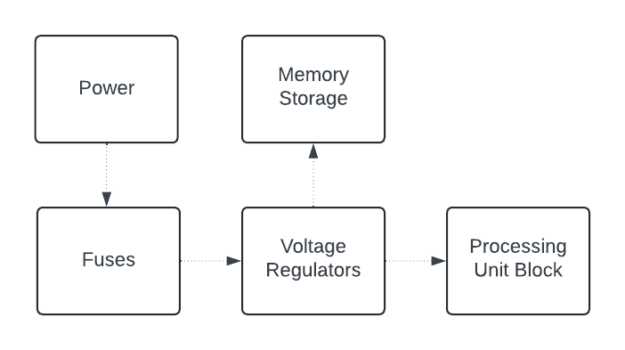

This diagram provides a high-level overview of the architectural design of the TI-30X IIS scientific calculator. It outlines the core components and their functional relationships within the device, illustrating how user inputs are processed to generate and display results. The major components depicted include the Input Mechanism (Keyboard), the Central Processing Unit (CPU), the Display, and the Power Supply, each playing a pivotal role in the operation of the calculator. The diagram also shows how power is distributed across the calculator and how data flows from the input keys through the processing unit to the display screen, where results are shown.
The diagram below meticulously outlines the electronic system architecture of the TI-30X IIS calculator. It details each critical component and their interconnections, providing insight into the internal workings of the device. From power management to data processing and output display, this diagram serves as a comprehensive guide for understanding the sophisticated electronic design that supports both basic and complex computational functions.
Tables showing expected and extreme values during operation including frequencies, voltages, current, power consumption, and battery lifetime.
| Parameter | Expected Value | Extreme Value |
|---|---|---|
| Frequency | 1 MHz | 1.2 MHz |
| Voltage | 3.3 V | 4.0 V |
| Current | 10 mA | 15 mA |
| Power Consumption | 100 mW | 150 mW |
| Battery Lifetime | 12 months | 6 months under extreme use |
The following diagrams provide a detailed view of the internal electronic circuitry of the TI-30X IIS calculator. Each schematic is carefully drafted to show every component and connection within the calculator, from simple resistors to complex integrated circuits.
Power Supply Block Diagram:
Processing Unit Block Diagram:
Memory Storage Block:
Input/Output Interfaces Block:
Circuit Protection and Management Block:
Thorough electrical Bill of Materials (BoM), including material costs breakdown.
| Component | Quantity | Unit Cost | Total Cost |
|---|---|---|---|
| Microprocessor | 1 | $2.50 | $2.50 |
| Display Screen | 1 | $1.20 | $1.20 |
| Power Supply Circuit | 1 | $0.75 | $0.75 |
| PCB | 1 | $0.50 | $0.50 |
| Solar Panel | 1 | $1.00 | $1.00 |
| Battery | 1 | $0.45 | $0.45 |
Thorough non-electrical Bill of Materials (BoM), including material costs breakdown.
| Component | Quantity | Unit Cost | Total Cost |
|---|---|---|---|
| Plastic Casing | 1 | $0.50 | $0.50 |
| Buttons | 30 keys | $0.10 per key | $3.00 |